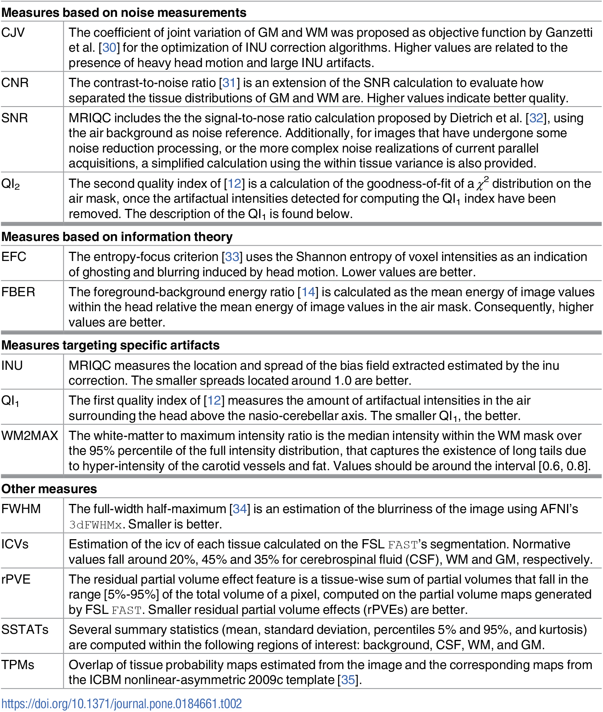
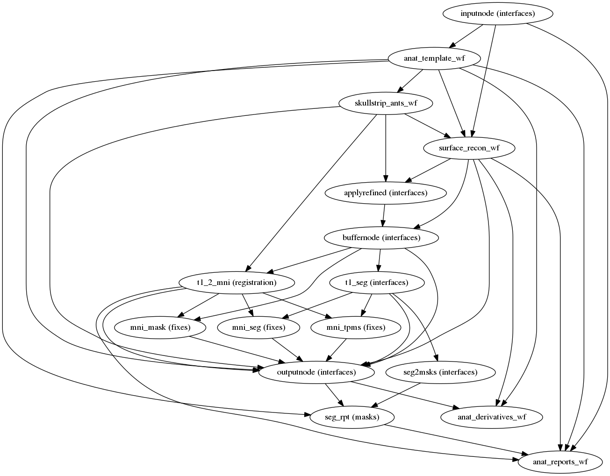
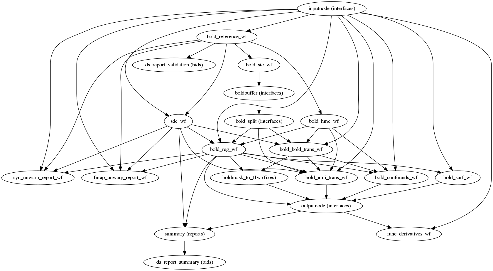

Standardized Imaging Pipelines:
BIDS, fmriprep, mriqc, and other tools
Björn Schiffler
Post-doc in Karin Jensen's group
Outline
- The Brain Imaging Data Structure (BIDS) format
- Getting your raw Dicom data to BIDS structured Nifti files
- The "container" philosophy of reproducibility (Docker/Singularity)
- Quality control of raw data with mriqc
- Preprocessing neuroimaging data with fmriprep
Why standardize your data storing?
The Brain Imaging Data Structure (BIDS) format
-
project/ - └── subject
- └── session (optional)
- └── acquisition
The Brain Imaging Data Structure (BIDS) format

- Dicom header information gets stored in .json files
- BIDS specification PDF
How do I get my data into BIDS format?
- Various tools available which help with that, e.g. heudiconv (heuristic dicom converter) or dcm2bids
- Conversion from .dcm to .nii on the fly usually included
- Worst case, getting data into BIDS format can also be done manually
- Check if correctly BIDS formatted via BIDS validation tools
Heudiconv
- Heudiconv uses heuristics to find the dicoms corresponding to anatomical, functional, diffusion-weighted etc. sequences
- These heuristics need to be adapted to each study
- E.g. "fmri_1" could be an fMRI session which has "fMRI" in the description and consists of 13650 dicoms
- "fmri_2" could have "fMRI" in the description and consist of 16044 dicoms
- Use what you know about your sequences to build a heuristic!
Example heuristic for heudiconv
t1w = create_key('sub-{subject}/anat/sub-{subject}_T1w')
dwi = create_key('sub-{subject}/dwi/sub-{subject}_run-{item:01d}_dwi')
pressure1 = create_key('sub-{subject}/func/sub-{subject}_task-pressure_rec-{rec}_run-1_bold')
pressure2 = create_key('sub-{subject}/func/sub-{subject}_task-pressure_rec-{rec}_run-2_bold')
info = {t1w: [], dwi: [], rest: []}
for s in seqinfo:
if (s.dim3 == 176) and ('t1' in s.series_description or 'T1' in s.series_description) and not s.is_derived: # and (s.dim4 == 1)
info[t1w] = [s.series_id] # assign if a single series meets criteria
if (s.dim3 == 3900) and (s.dim4 == 1) and ('dti' in s.series_description or 'DTI' in s.series_description):
info[dwi].append(s.series_id) # append if multiple series meet criteria
if (s.dim3 == 13650) and ('fmri_1' in s.series_description):
if s.is_motion_corrected: # exclude non motion corrected series
info[pressure1].append({'item': s.series_id, 'rec': 'corrected'})
else:
info[pressure1].append({'item': s.series_id, 'rec': 'uncorrected'})
if (s.dim3 == 16044) and ('fmri_2' in s.series_description):
if s.is_motion_corrected: # exclude non motion corrected series
info[pressure2].append({'item': s.series_id, 'rec': 'corrected'})
else:
info[pressure2].append({'item': s.series_id, 'rec': 'uncorrected'})
return info
Docker containers

- Container softwares such as Docker bundle all relevant software for processing
- Similar to Virtual Machines, but still rely on some OS subprocesses
- Having exact version numbers of bundled software allows for reproducibility
Containers vs. Virtual Machines
Docker containers
- Example: fmriprep bundles e.g. Freesurfer, FSL, AFNI, ANTs, among other tools
- You can make your own container when you have finished an analysis to archive everything needed to reproduce, e.g. package versions
Containers

Singularity containers
- Docker usually needs certain admin rights
- Singularity has been developed as a high performance cluster implementation for container based processing
- Singularity is installed on Akalla
Singularity workflow
- Obtain the relevant container in the version that you want
- Either directly from Singularity Hub (no conversion necessary) or from Docker Hub (docker2singularity conversion necessary)
- Conversion with docker2singularity requires a local installation of Docker
- Run the container
Container maintenance
- Containers can be archived in a central location on the server so that everyone has access to all of them
- Containers can be quite large (e.g. >10 GB per container for fmriprep), so deleting old/unused containers is important
Quality control of imaging data with mriqc
- How do you currently check the quality of your raw data? Visual inspection?
- mriqc is a BIDS tool to compare data quality across your dataset and helps to spot systematic errors during data acquisition
Quality control of imaging data with mriqc
With data in BIDS format, running mriqc is simple:
singularity run mriqc_container input_folder output_folder \
participant --no-sub -w work_folder --verbose-reports
Quality control of imaging data with mriqc
Quality control of imaging data with mriqc
- Overview of image quality metrics (IQMs) such as Framewise Displacement (FD), DVARS, SNR etc. in your raw data
- Both for anatomical as well as functional MRI data
Quality control of imaging data with mriqc
- 
Preprocessing your data with fmriprep
- Preprocessing pipeline for (f)MRI data
- Performs minimal preprocessing (skull stripping, motion correction, segmentation, coregistration, normalization etc.)
- No "controversial" steps such as smoothing
- Integration of Freesurfer for surface based processing (optional)
- Generates preprocessing quality reports in .html files
Preprocessing your data with fmriprep
With data in BIDS format, running fmriprep is simple:
singularity run fmriprep_container input_folder \
output_folder participant -w work_folder
Preprocessing your data with fmriprep - T1
- 
Preprocessing your data with fmriprep - fMRI
- 
Preprocessing your data with fmriprep
High level summary
- Adapt heudiconv heuristic.py to your study
- .dcm to .nii in BIDS with heudiconv
- Validate your BIDS folder structure
- Quality control with mriqc
- Preprocessing with fmriprep
- Quality check the .html output
Questions?
- Next: Going through a step-by-step tutorial